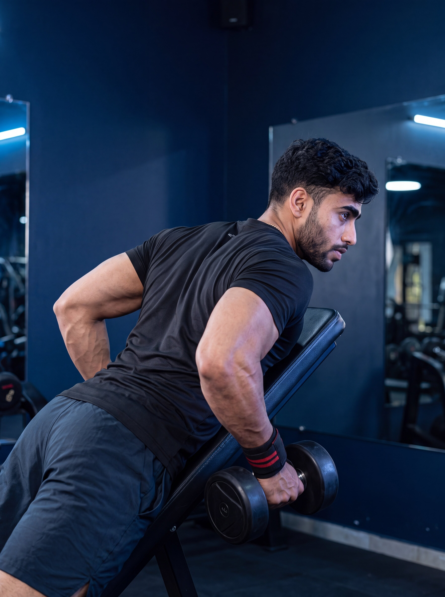

Primary Muscle
Latissimus Dorsi
Build Back Thickness, Improve Rowing Strength & Maximize Back Isolation
The Chest-Supported Dumbbell Row is a compound upper-body exercise that primarily targets the latissimus dorsi, rhomboids, and trapezius while also engaging the rear deltoids, biceps, forearms, and teres major. By supporting the chest on an incline bench, it minimizes lower-body involvement and helps improve back thickness, upper-body pulling strength, muscular control, and focused back development through a stable rowing movement.

Latissimus Dorsi
Dumbbells & Incline Bench
Beginner
Compound
Understand which muscles do most of the work during the Chest-Supported Dumbbell Row and which supporting muscles help pull the dumbbells, retract the shoulder blades, and control the movement throughout each repetition.
Lats
Middle Back
Upper and Middle Back
Rear Shoulders
Discover how the Chest-Supported Dumbbell Row helps develop back thickness, improve upper-body pulling strength, increase muscular control, and train the back effectively through a stable, bench-supported rowing movement.
Trains the latissimus dorsi, rhomboids, and trapezius through a controlled horizontal pulling motion, helping develop muscular strength and thickness across the middle and upper back.
Strengthens the muscles responsible for pulling resistance toward the torso, helping improve horizontal pulling ability and supporting stronger performance across other rowing and compound pulling exercises.
Supporting the chest against an incline bench reduces the need to maintain an unsupported hip-hinged position, allowing greater focus on the working back muscles with less demand on the spinal erectors.
The chest-supported position limits excessive torso swinging and momentum, making it easier to perform controlled repetitions with a consistent dumbbell path and deliberate back engagement.
The stable bench-supported setup allows greater focus on driving the elbows backward, controlling shoulder-blade movement, and maintaining smooth tension throughout both the pulling and lowering phases.
Dumbbell resistance can be increased gradually as your strength and technique improve, providing a measurable progression path for continued back development, stronger pulling performance, and greater movement control.
Follow these step-by-step instructions to perform the Chest-Supported Dumbbell Row with proper bench setup, stable body positioning, controlled dumbbell movement, and effective back engagement.
Adjust an incline bench to a comfortable angle and position a dumbbell on each side. Lie face down with your chest firmly supported against the bench and your feet planted securely on the floor.
Choose a bench angle that allows your arms to hang freely without the dumbbells touching the floor at the bottom of the movement.
Hold a dumbbell securely in each hand with your arms extended naturally beneath your shoulders. Keep your chest supported against the bench, maintain a neutral head position, and brace your core.
Keep your chest in contact with the bench throughout the exercise and avoid lifting your torso to create momentum.
Drive your elbows backward and pull the dumbbells toward the sides of your torso. Keep the movement smooth and controlled while allowing your shoulder blades to move naturally through the rowing motion.
Think about leading with your elbows rather than simply pulling the dumbbells upward with your hands and arms.
Continue rowing until your elbows reach a comfortable position beside or slightly behind your torso. Maintain chest contact with the bench and avoid forcing the dumbbells beyond your natural range of motion.
Briefly focus on contracting your back muscles at the top without shrugging your shoulders or lifting your chest away from the bench.
Gradually lower the dumbbells until your arms return to a comfortable extended position beneath your shoulders. Maintain control of the weights and allow your shoulder blades to move naturally before beginning the next repetition.
Do not let the dumbbells drop rapidly toward the floor. Control the lowering phase while keeping your chest supported and your body stable.
Avoid these common technique errors to improve back engagement, maintain stable bench-supported positioning, and perform the Chest-Supported Dumbbell Row more effectively.
Selecting dumbbells that are too heavy can make it difficult to maintain chest contact with the bench, control the rowing path, and perform consistent repetitions without relying on excessive momentum.
Choose manageable dumbbells that allow you to keep your chest supported, maintain a stable body position, control the elbow path, and perform smooth repetitions through a comfortable range of motion.
Raising your chest away from the bench while rowing can introduce momentum, reduce the stability provided by the supported position, and make it harder to maintain consistent tension on the intended back muscles.
Keep your chest firmly supported against the bench throughout each repetition while driving your elbows backward and allowing your shoulder blades to move naturally through the rowing motion.
Pulling the shoulders excessively toward the ears can make it harder to maintain controlled shoulder positioning and may shift unnecessary emphasis toward the upper trapezius instead of the intended middle-back muscles.
Keep your shoulders comfortably away from your ears and focus on driving your elbows backward while maintaining controlled shoulder-blade movement throughout each repetition.
Allowing the dumbbells to drop rapidly toward the floor can reduce movement control, shorten time under tension, and make it harder to maintain consistent back engagement throughout the exercise.
Lower the dumbbells gradually until your arms return to a comfortable extended position, maintaining chest support, body stability, and control of the weights before beginning the next repetition.
Apply these practical coaching cues to improve your Chest-Supported Dumbbell Row technique, increase back engagement, maintain stable bench-supported positioning, and perform each repetition with greater control and consistency.
Focus on driving your elbows backward as you row the dumbbells toward your torso rather than simply lifting the weights with your hands and arms.
Think about leading each repetition with your elbows while keeping the dumbbells under control. This cue can help you focus on the working back muscles throughout the pulling phase.
Maintain consistent chest contact with the incline bench throughout each repetition instead of lifting your torso to create momentum or move heavier dumbbells.
The bench provides stability and limits unnecessary torso movement. Keep your body supported while your arms and shoulder blades perform the rowing motion.
Lower the dumbbells gradually as your arms extend, maintaining control of the weights while allowing your shoulder blades to move naturally and your back muscles to reach a comfortable stretched position.
Do not let the dumbbells drop rapidly toward the floor. Keep the lowering phase smooth and controlled while maintaining chest support and stable body positioning.
Increase the dumbbell load only when you can maintain consistent chest support, controlled elbow movement, a comfortable range of motion, and smooth repetitions from start to finish.
Heavier dumbbells should not require lifting your chest off the bench, shrugging excessively, shortening the range of motion, or jerking the weights upward. Progress gradually while keeping every repetition controlled and consistent.
Progress from learning proper rowing mechanics to building stronger back development through increased resistance, improved control, and consistent chest-supported technique.
Begin with manageable dumbbells and focus on establishing a strong bench-supported position, controlled elbow movement, stable chest contact, and effective back engagement throughout every repetition.
Proper bench angle, stable body positioning, neutral spine, controlled dumbbell path, smooth repetitions, and learning to engage the back muscles instead of relying on momentum.
Develop stronger mind-muscle connection by controlling both the pulling and lowering phases while maintaining chest support and consistent rowing mechanics through every set.
Driving elbows backward, squeezing the shoulder blades naturally, controlling the eccentric phase, maintaining stable bench contact, and improving consistency.
Once proper technique is consistent, gradually increase dumbbell weight while maintaining controlled repetitions, stable chest support, and full comfortable range of motion.
Progressive overload, maintaining technique under heavier loads, strong elbow drive, controlled tempo, and avoiding momentum-based lifting.
After mastering heavier dumbbells with excellent control, continue progressing through increased training volume, advanced tempos, pauses, and challenging variations while maintaining strict rowing mechanics.
Advanced progression, controlled intensity, consistent technique, strong back activation, and selecting variations that support your individual strength and development goals.
Find clear answers to common questions about Chest-Supported Dumbbell Row technique, muscles worked, bench positioning, dumbbell path, grip selection, training volume, and exercise progression.
The Chest-Supported Dumbbell Row primarily targets the latissimus dorsi, rhomboids, and trapezius muscles. It also engages the rear deltoids, biceps, forearms, and supporting stabilizers while the bench support helps maintain a stable body position throughout each repetition.
A moderate incline bench angle is commonly used for Chest-Supported Dumbbell Rows. The exact angle can vary depending on your body structure, equipment, and comfort. Choose a position that allows your chest to remain supported while your arms can move freely through a controlled rowing motion.
Pull the dumbbells upward toward your lower chest or rib area while driving your elbows backward. Keep the dumbbells moving through a controlled path and focus on using your back muscles rather than simply lifting the weight with your arms.
Allow your shoulder blades to move naturally during the rowing motion while maintaining control. A controlled squeeze at the end of the pull can help improve back engagement, but avoid forcing excessive shoulder blade movement or changing your body position to lift the dumbbells higher.
Yes. The Chest-Supported Dumbbell Row can be a beginner-friendly rowing exercise because the bench provides additional stability and reduces the need to hold a bent-over position. Beginners should start with manageable dumbbells and focus on proper bench setup, controlled movement, stable positioning, and consistent technique.
The appropriate number of sets and repetitions depends on your training experience, goals, recovery, and overall program. For general muscle development, a common starting point is around 2–4 working sets of 8–15 controlled repetitions using a weight that allows you to maintain stable chest support, controlled dumbbell movement, comfortable range of motion, and proper rowing technique.
Explore other back exercises that complement the Chest-Supported Dumbbell Row and help you develop back thickness, pulling strength, muscular balance, and stronger rowing performance through different resistance methods.
Continue building your back strength and training knowledge with step-by-step exercise guides covering proper technique, muscles worked, common mistakes, coaching tips, and progression strategies.